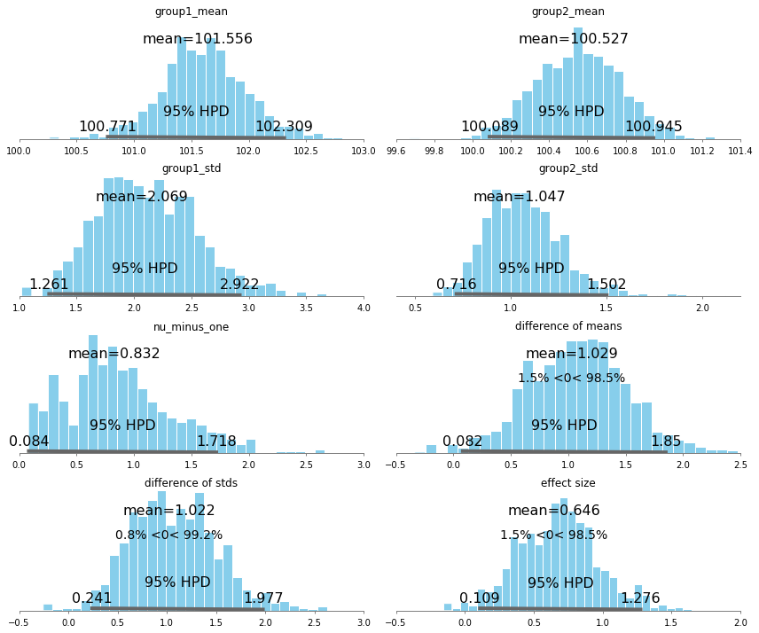

Bayesian Estimation Supersedes the T-Test¶
This model replicates the example used in: Kruschke, John. (2012) Bayesian estimation supersedes the t-test. Journal of Experimental Psychology: General.
The original pymc2 implementation was written by Andrew Straw and can be found here: https://github.com/strawlab/best
Ported to PyMC3 by Thomas Wiecki (c) 2015.
%matplotlib inline
import numpy as np
import pymc3 as pm
Data from two experimental arms
drug = (101,100,102,104,102,97,105,105,98,101,100,123,105,103,100,95,102,106,
109,102,82,102,100,102,102,101,102,102,103,103,97,97,103,101,97,104,
96,103,124,101,101,100,101,101,104,100,101)
placebo = (99,101,100,101,102,100,97,101,104,101,102,102,100,105,88,101,100,
104,100,100,100,101,102,103,97,101,101,100,101,99,101,100,100,
101,100,99,101,100,102,99,100,99)
Create variables for model
y1 = np.array(drug)
y2 = np.array(placebo)
y = np.concatenate((y1, y2))
mu_m = np.mean( y )
mu_p = 0.000001 * 1/np.std(y)**2
sigma_low = np.std(y)/1000
sigma_high = np.std(y)*1000
with pm.Model() as model:
group1_mean = pm.Normal('group1_mean', mu=mu_m, tau=mu_p, testval=y1.mean())
group2_mean = pm.Normal('group2_mean', mu=mu_m, tau=mu_p, testval=y2.mean())
group1_std = pm.Uniform('group1_std', lower=sigma_low, upper=sigma_high, testval=y1.std())
group2_std = pm.Uniform('group2_std', lower=sigma_low, upper=sigma_high, testval=y2.std())
nu = pm.Exponential('nu_minus_one', 1/29.) + 1
lam1 = group1_std**-2
lam2 = group2_std**-2
group1 = pm.StudentT('drug', nu=nu, mu=group1_mean, lam=lam1, observed=y1)
group2 = pm.StudentT('placebo', nu=nu, mu=group2_mean, lam=lam2, observed=y2)
diff_of_means = pm.Deterministic('difference of means', group1_mean - group2_mean)
diff_of_stds = pm.Deterministic('difference of stds', group1_std - group2_std)
effect_size = pm.Deterministic('effect size', diff_of_means / pm.sqrt((group1_std**2 + group2_std**2) / 2))
trace = pm.sample(2000)
Applied interval-transform to group1_std and added transformed group1_std_interval to model.
Applied interval-transform to group2_std and added transformed group2_std_interval to model.
Applied log-transform to nu_minus_one and added transformed nu_minus_one_log to model.
Assigned NUTS to group1_mean
Assigned NUTS to group2_mean
Assigned NUTS to group1_std_interval
Assigned NUTS to group2_std_interval
Assigned NUTS to nu_minus_one_log
[-----------------100%-----------------] 2000 of 2000 complete in 10.6 sec
pm.plot_posterior(trace[1000:], color='#87ceeb');

pm.plots.summary(trace[1000:])
group1_mean:
Mean SD MC Error 95% HPD interval
-------------------------------------------------------------------
101.556 0.378 0.010 [100.771, 102.309]
Posterior quantiles:
2.5 25 50 75 97.5
|--------------|==============|==============|--------------|
100.798 101.326 101.560 101.787 102.352
group2_mean:
Mean SD MC Error 95% HPD interval
-------------------------------------------------------------------
100.527 0.223 0.007 [100.089, 100.945]
Posterior quantiles:
2.5 25 50 75 97.5
|--------------|==============|==============|--------------|
100.093 100.372 100.530 100.679 100.950
group1_std:
Mean SD MC Error 95% HPD interval
-------------------------------------------------------------------
2.069 0.440 0.023 [1.261, 2.922]
Posterior quantiles:
2.5 25 50 75 97.5
|--------------|==============|==============|--------------|
1.292 1.752 2.037 2.370 3.080
group2_std:
Mean SD MC Error 95% HPD interval
-------------------------------------------------------------------
1.047 0.207 0.010 [0.716, 1.502]
Posterior quantiles:
2.5 25 50 75 97.5
|--------------|==============|==============|--------------|
0.717 0.905 1.029 1.166 1.508
nu_minus_one:
Mean SD MC Error 95% HPD interval
-------------------------------------------------------------------
0.832 0.471 0.038 [0.084, 1.718]
Posterior quantiles:
2.5 25 50 75 97.5
|--------------|==============|==============|--------------|
0.105 0.522 0.770 1.090 1.896
difference of means:
Mean SD MC Error 95% HPD interval
-------------------------------------------------------------------
1.029 0.444 0.011 [0.082, 1.850]
Posterior quantiles:
2.5 25 50 75 97.5
|--------------|==============|==============|--------------|
0.146 0.727 1.040 1.315 1.928
difference of stds:
Mean SD MC Error 95% HPD interval
-------------------------------------------------------------------
1.022 0.452 0.020 [0.241, 1.977]
Posterior quantiles:
2.5 25 50 75 97.5
|--------------|==============|==============|--------------|
0.241 0.695 0.997 1.317 1.977
effect size:
Mean SD MC Error 95% HPD interval
-------------------------------------------------------------------
0.646 0.297 0.010 [0.109, 1.276]
Posterior quantiles:
2.5 25 50 75 97.5
|--------------|==============|==============|--------------|
0.089 0.434 0.647 0.831 1.271
/Users/fonnescj/anaconda3/lib/python3.5/site-packages/numpy/core/fromnumeric.py:225: VisibleDeprecationWarning: using a non-integer number instead of an integer will result in an error in the future
return reshape(newshape, order=order)